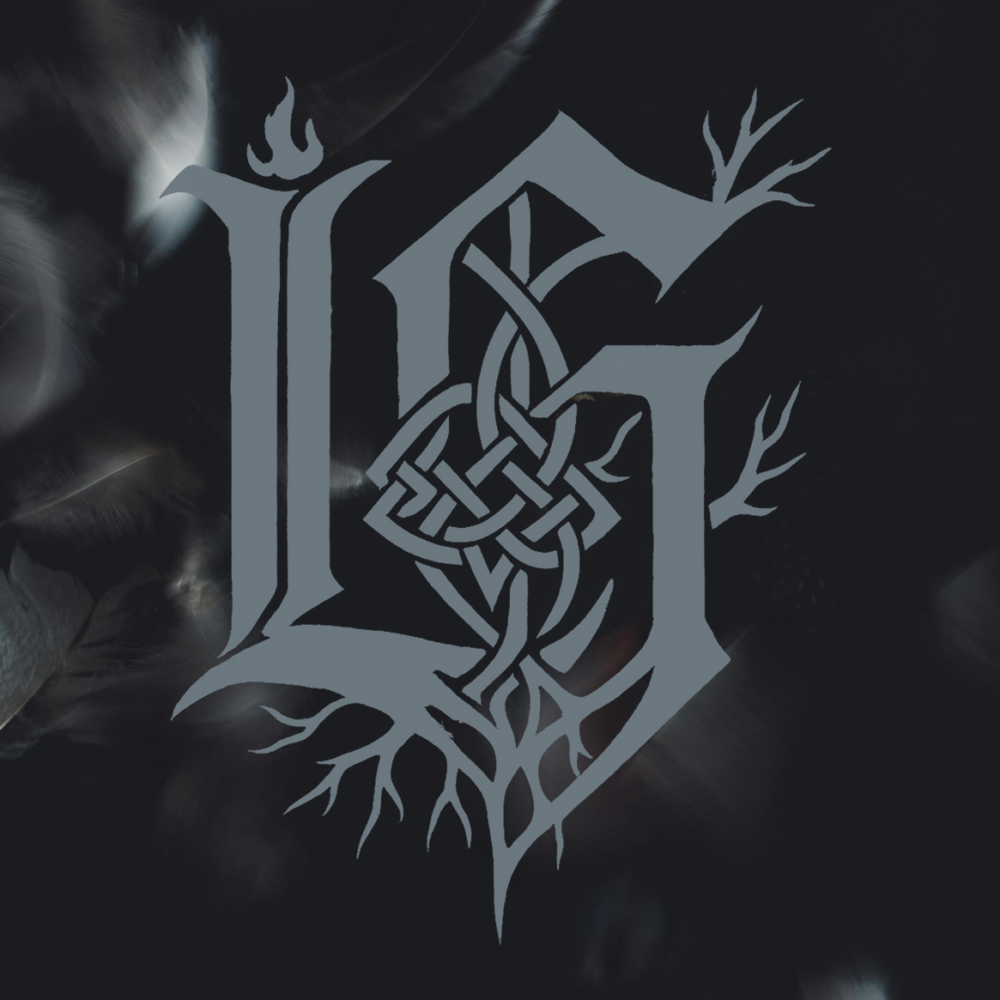

Wake Up
July 4, 2026
Cinematic Spoken Word
You can sleep if you want — but remember: sleep is a luxury sold to you in monthly payments.
I’m not here to comfort you with metaphors. I’m here with a flashlight and a plea.
We built a house of laws and called it freedom,
but in the attic sits the ledger, thick with interests and margin calls —
and the Federal Reserve quietly flips the thermostat on who can breathe easy.
They learned to speak through code:
an app that asks what music you like, a quiz that says “which candy are you?”
And suddenly your ghost of preferences is mapped, sold, and nudged —
Cambridge Analytica plucked the strings while Facebook watched the theater.
Your attention was never the product, it was the currency.
They learned to fracture us the way you split wood:
find the crack, pry it wider, tell one side the other is the enemy.
Red ribbon. Blue ribbon. Facts vs feelings. Newsfeeds tuned like violins to play the same discord.
The divide is their policy; the outrage, their marketing plan.
They meet where the compost of power grows rich:
men in suits who laugh around owls and wine, or in rooms that refuse reporters’ lenses —
Bohemian Grove fires, Bilderberg hallways, velvet doors, guest lists that never see the sunlight.
If democracy is a banquet, they are the chefs who pick the menu — and the rest of us only choose between two plates.
And when money became a megaphone — Citizens United handed the richest the mic.
They do not need to win hearts honestly; they buy the orchestra and the reviews.
They shape the ballot before you see it by shaping which candidates have the funds, the airtime, the backing.
Elections become channels on a subscription plan you never agreed to buy.
I’m not naming this to start a campfire of conspiracy —
I’m naming it to put a mirror in your hands.
Name the island for what it is: a crime scene of privilege and silence, a map of how secrecy can be weaponized —
Little Saint James, where the powerful hid in plain sight and the law found too many blind corners.
We have been taught to cower before the spectacle:
to sign petitions that go nowhere, to click outrage and log off like a sacrament,
to accept the scaffolding while they add another floor to their towers.
But here’s the blunt, stubborn truth — and I’ll say it soft because I want you alive afterwards:
power is not mystical. It’s paperwork, payroll, access, and complicit quiet.
Power can be unlearned by exposure: sunlight, records, votes that move beyond theater, community money that repowers neighborhoods, not headlines.
You who hold coffee in trembling hands and fear the news, listen:
you are not only the audience — you are the chorus.
You have eyes, voices, neighbors, ballots, time, small acts of courage that feel silly until they’re not.
So stop letting them teach you how to hate your neighbor.
Stop letting your anger be rented and streamed back to you with ads on top.
Stop picking the lesser two evils like lottery tickets while the house collects the take.
Wake up is not a slogan. It is a decision.
It is naming the banker, the platform, the law, the island — then refusing to let the names keep their private rooms.
It is sending money to people who do not bow to the money, it is showing up, it is talking to the neighbor you think is “the enemy,” it is reading the receipts and not just the headlines.
We are not broken beyond repair — we were mis-sold a map.
So fold that map, step into the terrain, and start building again with hands that know how to plant and heal.
I beg you, America: stop letting them bait you into hating your neighbor.
Stop letting them carve your shared home into smaller, profitable pieces.
Stop trading your attention for a life of headlines and hollow wins.
For the love we were promised by our better angels — wake up.
For the children learning who we are by what we tolerate — wake up.
For the sacred ground beneath our feet, the rivers, the stubborn, holy ordinary people — wake up.
And when you wake, don’t storm the gate with torches — bring a list, bring witnesses, bring light.
Call out the systems, name the institutions, demand the records, refuse the scripts.
Refuse to be divided. Refuse to be sold. Refuse to be quiet.
Wake up — not with fury alone, but with a fierce, relentless, neighborly love.
Because the only thing more dangerous to those who hoard power than a protest is a people who talk to one another again.
Wake up. Wake up. Wake up.
— End with hands joined, not weapons.
Wake up, America: stop letting them divide us. Be awake, be wise, stand together.
They draft division like a blueprint for control,
highlight the fractures, then they market us the role.
Point and repeat, keep the cycle on spin,
train the crowd to snarl so the cage feels like a win.
Feed us a headline, season it with fear,
tell us who to blame so the target stays clear.
They don’t need chains when the rage is self-made,
just a spark in the dark and a match in the shade.
But I hear a still voice cutting through the noise,
saying truth ain’t loud — it’s a choice.
Hands off my head, hands off my soul,
I breathe, I choose, I keep control.
You preach your anger — I answer with light,
your script is smoke, it fades on sight.
You can shout your orders, try to bend me thin,
I break the pattern — I won’t buy in.
They want us tribal, eyes closed, fists tight,
so we swing at each other, never look at the height
of the tower they’re in, counting profits from pain,
selling war in a whisper, calling hatred a gain.
We become what we fight when we swallow the cue,
turn into reflections of the lies they threw.
But I cut the cord, let the program crash,
no more puppet strings, no more mask.
Static clears when the spirit stands tall,
truth don’t divide — it calls.
Hands off my head, hands off my soul,
I breathe, I choose, I keep control.
You preach your anger — I answer with light,
your script is smoke, it fades on sight.
You can shout your orders, try to bend me thin,
I break the pattern — I won’t buy in.
No more mirrors made of fear,
no more enemies invented here.
I see the thread, I see the seam,
I wake up inside the dream.
You can flood the airwaves, flood the streets,
but truth still hums beneath the beats.
And it’s louder than your lies have been —
a pulse that says, begin again.
Divide! — I unify.
Hate! — I deny.
Control! — not mine.
Your script! — declined.
Hands off my head, hands off my soul,
I breathe, I choose, I keep control.
You preach your anger — I answer with light,
your script is smoke, it fades on sight.
You can shout your orders, try to bend me thin,
I break the pattern — I won’t buy in.
I won’t buy in…
I won’t buy in…
Clear mind. Steady heart. Free within.
Shadows, count, corridors — whisper kings in glass,
sell the vow, sign the pact, pocketed promises pass,
serpent suits, silk-tied smiles, scripture sold as stock,
clockwork nods, secret courts — midnight trades, tick-tock.
Watch them bow, watch them file, hollow names on file,
ledger lights, velvet lies, the contract hides the trial.
Yahweh surround me, rise a wall of iron light,
Yahweh surround me, hold my back through every night,
let Your shadow be my shield, let Your voice be sword and song,
Yahweh give me strength to stand, to hold the line and carry on.
Spotlights pop like apocalypse optics adopted by oligarchs,
populace locked in a box of the gossip and mockery markets,
lobbyists copy the policies properly profiting off of the darkness,
charters departing at midnight with archives of targeted bargains,
Saint James staying the same with the shame never named in the archives,
papered arrangements are stapled and taped to the faces of false guides,
statements are shaped till the language is strangled and strangled again,
angels are watching the angles of danger they dance with in sin.
Prayer drums under ribs, steady tide beneath the fray,
masks peel, fires breathe — faith keeps night from swallowing day.
Yahweh surround me, gird me with Your ancient hands,
Yahweh surround me, let me stand where justice stands,
if the wolves howl at the gates and empires bend and lie,
Yahweh be the fortress — never fail, never pass me by.
Ashes of their autographs, the island keeps its names,
I walk with breath from heaven; I call Your holy name.
Those who gain power through the destruction of innocence and ransom life will fall.
Those who gain power through the destruction of innocence and ransom life will fall.
Those who gain power through the destruction of innocence and ransom life will fall.
Those who gain power through the destruction of innocence and ransom life will fall.
Those who gain power through the destruction of innocence and ransom life will fall.
Those who gain power through the destruction of innocence and ransom life will fall.
Those who knew — you kept the ledger closed and smiling,
those who hid things — folded evidence into polite pilings,
those who continue to hide things — the quiet custodians of rot,
those who facilitated — opened doors with handshakes and forgot,
those who heard the screams and said nothing — counted convenience as grace.
You traded childhood for invitations, silence for status,
and now the walls are whispering the names you tried to erase.
Are we ready to rip the veil? Do we want the whole wound shown?
I’m not sure we are ready — but we deserve to know.
Those who gain power through the destruction of innocence and ransom life will fall.
Those who gain power through the destruction of innocence and ransom life will fall.
Those who gain power through the destruction of innocence and ransom life will fall.
Those who gain power through the destruction of innocence and ransom life will fall.
The survivors deserve to be heard — the truth deserves a voice,
to breathe without fear, to sleep with peace, to have choice.
We will make room at every table and every microphone,
we will learn the names, restore what was stolen, bury the shame.
The conspirators — let them rot in the light we force upon them,
not with glee, but with justice: exposure, consequence, closure.
We will not be silent, we will not look away,
we will lift the shards into a fire that burns lies to ash.
To the broken: we vow attention, we vow protection, we vow the truth.
To the guilty: we vow to unmake your markets, to dismantle your bargains.
Those who gain power through the destruction of innocence and ransom life will fall.
Those who gain power through the destruction of innocence and ransom life will fall.
Those who gain power through the destruction of innocence and ransom life will fall.
Those who gain power through the destruction of innocence and ransom life will fall.
Let them rot. Let them rot. Let them rot.
We won’t be silent while innocence is stolen — you all will fall.
Those who gain power through the destruction of innocence and ransom life will fall.
Whispers in the wires, prophets on the payroll,
crowns made of paper while the masses stay low.
I see the systems, twisting, wishing for more power,
control, that’s the goal, coils tighten every hour,
menus full of rulers but the meal is always fear,
puppet strings invisible, they tangle round the ear,
feed us with division, keep the vision tunnel-bound,
truth is in a cage while the lies parade around,
scripted opposition, different mask, the same grin,
two sides of a blade, either way it cuts skin.
You feel it closing in — the pressure in the dome,
every throne they build is just another kind of zone.
They don’t want souls awake — they want control,
they don’t want light exposed — they want the role,
kings of illusion on a paper throne,
pulling every string till the truth is gone.
Dogma in the doctrine, lockstep in the pews,
politicians preaching like they’re selling sacred views,
silver-tongued serpents with a ballot and a grin,
promise you salvation while they tax you for your sin,
data is the deity, they tally every breath,
algorithms judging who is worthy, who is left,
history rewritten with permission and a pen,
cycle spins again and again and again.
Not left, not right — just chains dressed different.
Not faith, not doubt — just cages consistent.
See the veil. Tear it down.
Hear the lie. Feel the crown.
Stand awake. Hold your ground.
Truth is louder than the sound.
When the blindfold slips and the gears all show,
you’ll see who runs the stage… and who runs the show.
Welcome to America — sit down, behave, play your role,
same script, new masks, different lies getting sold.
Scroll, scroll, swipe — TL;DR your soul, let a box tell you what you should know,
anger spikes — data points — now they pull on the ropes below.
Red flash, blue flash, same hands backstage,
marionettes dancing, same names on a different page.
Feed the fear, keep it tribal, stoke the feed till it’s bright,
comment war, midnight, algorithm picks your fight.
Think you chose? Nah — you were shown the lane,
free will wrapped up in a clickable chain.
If you still think there’s a left and right — you’re staring at shadows, missing who holds the light.
Turn your back — on your brother — for a screen,
pick a side — think you’re free — serve the machine,
fake war — same kings — pull the scene,
two sides — one coin — same island — same dream.
They argue for cameras — cue lights, scripted rage on cue, headlines spun tight,
slogans flip — pocket slides — same donors booking flights.
Different mouths, same money, same quiet retreat,
we bleed noise in the streets while they dine off the beach.
Echo chamber — repeat — if you don’t agree, you’re the enemy,
civil talk’s a fossil buried deep in the feed’s debris.
Say the line, hit the bite, ad revenue in the night,
while the truth rents a boat and sails out of sight.
If you still think there’s a left and right — you’re staring at shadows, missing who holds the light.
Turn your back — on your brother — for a screen,
pick a side — think you’re free — serve the machine,
fake war — same kings — pull the scene,
two sides — one coin — same island — same dream.
They scream at each other under studio lights… then meet on the island the very same night.
No cameras. No crowds. No sides to defend. Funny how the war always ends at the sand.
Same hands. Same money. Same island.
Turn your back — on your brother — for a screen,
this ain’t a war — it’s a stage — it’s a scene,
if the fight — was real — they’d bleed,
but the puppets bow together — same island — same seat.
If you still believe in sides… you weren’t fooled. You were trained.
Chains drag on stone,
a pulpit built from fear and tone.
Breath before the storm.
You quote the verse like a loaded round, pop-pop-pop,
aim for the heart, never read it out loud, don’t stop,
page turn weaponized, faith bent, twisted and proud,
skip past love but you linger on judgment aloud.
Tongue like a gavel, you sentence the weak in a breath,
spit out the letter, ignore what it cost them in flesh,
mercy too messy, you’d rather be right than be real,
so you cut out the grace just to tighten the seal.
Hands up high but the fist stays clenched,
talk freedom while the leash stays stretched.
You preach control in a sanctified tone,
build your throne out of other folks’ bones.
That’s not the Word.
That’s a cage
with a cross bolted on.
You don’t set free, you brand, you bind,
hide your hunger in the holy line.
If love’s the root, why does it bleed?
Set us free
or drop the book.
Count the heads, count the sins, make a chart, make a case,
if they don’t fit your design you erase their face.
Obedience over compassion, that’s your creed,
if they question the fence you call it greed.
Measure souls with a ruler, cut the ones that don’t bend,
call it order, call it truth till it serves your ends.
You missed the part where the captives rise,
where mercy moves and the veil gets ripped open wide.
You read the law,
skipped the hands in the dirt,
skipped the healing,
obsessed with the hurt.
You don’t shepherd.
You harvest fear.
You don’t set free, you script the pain,
twist the truth till it serves your reign.
If light arrived to unbind the weak,
why does your gospel sharpen its teeth?
If your faith needs chains to survive,
it’s already dead.
If your god looks scared of mercy,
check who you’re serving.
This isn’t reverence.
This is control wearing scripture like a mask.
Who did this for you?
Not love.
Who taught you fear?
Not truth.
Who took the keys
and called it God?
You did.
Faith was fire, you made it a fence.
Grace was a door, you welded it shut with sense.
We’re done bleeding to prop your throne.
The stone’s rolled back, we’re walking home.
The truth still frees,
even when you try to kill it.
Pray we never meet.
Weak and pathetic, I said it, you’ll regret it, the darkness is coming, your rhetoric won’t save you,
your terror turns, time to burn, spineless worms on a hook, now it’s time to face what’s true.
We’ll make sure your cell mates know your name (CHOMO),
the harm you caused will plague you like shame.
The children you tortured, their faces will haunt you,
the demons you summoned will return to taunt you.
You are nothing — hollow echoes in a room,
you are nothing — cowards in cheap costumes,
you will fade and the world will forget,
light will prevail,
it’s like you don’t exist.
Pathetic nothings, causing suffering, you can’t escape,
manipulate, full of hate, it’s too late, this door you opened
will suffocate.
You have no power,
you have no power,
there’s no going back now (you’re being hunted),
you will be consumed (by what you wanted).
The children you tortured, their faces will haunt you,
the demons you summoned will return to taunt you.
You are nothing — hollow echoes in a room,
you are nothing — cowards in cheap costumes,
you will fade and the world will forget,
light will prevail,
it’s like you don’t exist.
You are nothing,
you will cease to exist.
They will forget you
and the scars on their wrist.
You are nothing,
you will cease to exist.
They will forget you
and the scars on their wrist.
You are nothing — hollow echoes in a room,
you are nothing — cowards in cheap costumes,
you will fade and the world will forget,
light will prevail,
it’s like you don’t exist.
Pay attention.
This is how manipulation works.
They segment the audience, micro-target every group,
same issue, different message, tailored for the loop.
Different feeds, different words, same claim underneath,
if it sounds custom-fit, compare it — check the receipts.
Trusted messenger amplification — “one of us” on the screen,
influencers, clergy, local faces suddenly on the same theme.
Endorsements drop together, timing way too clean,
ask who paid, ask who wrote it, ask where it’s been.
If the voice feels borrowed,
if the switch was overnight,
stop the scroll — slow it down,
check the funding. Check the light.
They want to keep us divided — split us, score us, own our trust.
They push the same lie to different corners so we fight the wrong fight.
Name the tactic, call the funding, expose the coordination.
We won’t feed the divide — we verify, we link, we act.
Bandwagon framing — “everyone agrees,”
viral numbers screaming consensus, no sources you can see.
Astroturf movements — fake grassroots roots,
hundreds of small accounts saying the same thing in boots.
Coordinated inauthentic behavior — posting in sync,
new accounts, low followers, all repeating the link.
Bot amplification — fake likes, fake shares,
spikes at weird hours, nobody there.
If the metrics don’t match the history,
if the crowd showed up too fast,
that’s not momentum,
that’s manufactured mass.
They want to keep us divided — split us, score us, own our trust.
They push the same lie to different corners so we fight the wrong fight.
Name the tactic, call the funding, expose the coordination.
We won’t feed the divide — we verify, we link, we act.
Influencer seeding — talking-point packages,
identical captions, mirrored language.
Narrative framing — one angle, no debate,
meme warfare — no sources, just sharebait.
Selective truth — stats with no context,
emotional amplification — fear clicks next.
Hashtag hijacking — forcing trends to rise,
deepfakes and synthetic media — believe your eyes twice.
Sockpuppets. Persona networks.
Paid content with no disclosure.
Algorithm gaming. Earned media laundering.
Same story. Different channel.
They want to keep us divided — split us, score us, own our trust.
They push the same lie to different corners so we fight the wrong fight.
Name the tactic, call the funding, expose the coordination.
We won’t feed the divide — we verify, we link, we act.
Compare the messages.
Check the ad libraries.
Verify endorsements.
Reverse image search.
Save receipts.
Say the tactic out loud.
That’s how you break it.
Go research.
JP 3-13.2 — Military Information Support Operations — U.S. Department of Defense.
DoD MISO and PSYOP doctrine and planning documents.
Oxford Internet Institute — Computational Propaganda reports on social media manipulation.
RAND Corporation — studies on hostile social manipulation and disinformation campaigns.
Platform ad transparency libraries — Meta, Google, and X political and issue ad databases.
When people say the election is rigged… it is.
Just not in the way you’ve been led to believe.
Votes are counted. Machines are checked.
That is not where most of the control happens.
Control happens before you ever see a name.
Before you ever hear a voice.
Before you ever step into a booth.
Money decides who gets to exist in your awareness —
two thousand ten, the courts said spend with no limit, no fairness,
wealthy individuals, organizations, corporate apparatus
pouring massive funds in elections — and the goal? To embarrass
every candidate without the backing, strip ’em down to the barest.
That money pays for ads, it pays for staff,
it pays for data, pays for influence — do the math.
It pays for repetition, and repetition builds recognition,
so you see the same names, same faces, same position —
not because they are the only options on the mission,
because they are the only ones funded with precision.
Candidates without that backing don’t disappear ’cause they’re unqualified —
they disappear because they’re unseen, pushed aside.
And if you are unseen?
You are not a choice.
Media decides who you are allowed to hear —
major networks choose who gets the interview, who gets the air.
Those decisions based on ratings, existing attention, party ties —
maybe you should research who owns those networks, open your eyes.
Local journalism? Reduced. Fewer reporters on the beat,
fewer investigations, fewer independent voices in the street,
so fewer candidates are covered, fewer names that you can meet.
And when people do not hear your name, they do not trust your name,
and when they do not trust your name, they do not vote the same.
This is not complicated —
it’s exposure control, plain.
Debate stages are controlled by rules you did not vote on —
polling thresholds, qualification requirements they wrote on.
You must already be known to be allowed on the stage
where people get known — you see the cage?
Without exposure you cannot meet the threshold set,
without the threshold met you don’t get exposure yet —
so most candidates are removed before the public ever gets
to compare them, side by side, place intelligent bets.
Not removed by voters —
by rules written by the people in power
so the people in power stay in power every hour.
If you control the options,
you don’t have to rig the votes.
If you control the options,
you don’t have to rig the votes.
No need to touch the ballots,
no need to change the count.
If you control the options,
you decide what counts.
Ballot access laws decide who’s even printed in front of you —
signatures, fees, deadlines they run you through,
requirements that major parties are built to meet
and everybody else? They crumble in defeat.
Campaigns fail here before they ever reach your hands,
and when a name is not printed, it is not part of the plans.
You cannot vote for someone
you are not allowed to see —
that’s not democracy,
that’s a controlled guarantee.
District maps are drawn by people holding power —
those maps decide which areas vote together every hour,
which races are competitive, which ones are already decided.
In many districts the outcome’s predictable — the people? Divided.
So the real decision happens earlier, in primaries, within parties,
with fewer choices, fewer voices — who you think it hardly
benefits? Not you. It limits competition,
limits outcomes, limits your position.
Targeted ads send different messages to different groups —
you do not see what others see, they got you running loops.
Major donors decide which races matter, where the money’s placed.
That determines visibility.
That determines who gets erased.
Money decides who is seen.
Media decides who is heard.
Rules decide who is allowed.
Maps decide who can win.
If you control the options,
you don’t have to rig the votes.
If you control the options,
you don’t have to rig the votes.
No need to touch the ballots,
no need to change the count.
If you control the options,
you decide what counts.
This is how control works.
Not after the vote —
before it.
Low strings crawl like smoke through the cracks.
A prayer with no audience.
A flag in the fire.
A sermon in the mouth of a liar.
We are not born with a taste for blood.
We are born with tired hands and hearts that want enough.
Most of us just want a roof and a meal,
some quiet nights, something real.
We do not wake up hungry for another grave.
We are not built to become what the rulers crave.
They point at shadows, then hand us a blade
and call it duty when the harvest is paid.
They sell fear like bread,
they feed on the dead,
they need us divided
so we stay guided.
We were deceived
into kneeling to the machine,
into fearing our brother
and calling it peace.
Take the crown off the liar,
take the torch from the priest.
When the chains hit the floor,
maybe we will finally breathe.
And religion, too, with its polished teeth.
Too many voices telling us how to reach
the Holy One, like He cannot speak,
like the veil is theirs and not ours to seek.
They turned devotion into a lock and key,
made control look holy, made captivity mercy.
But God was never theirs to contain,
never meant to fit in a system made for gain.
They sell fear like bread,
they feed on the dead,
they need us divided
so we stay guided.
We were deceived
into kneeling to the machine,
into fearing our brother
and calling it peace.
Take the crown off the liar,
take the torch from the priest.
When the chains hit the floor,
maybe we will finally breathe.
No more wars for the throne,
no more lies in the stone,
no more holy men owning
what was never theirs alone.
We are not your pawns,
we are not your flock,
we are souls with a pulse
and a fire you cannot lock.
I still believe there is a better way.
Not naive, just brave.
If no one was fed the poison of fear,
would the war drums disappear?
If we met each other as neighbors, not targets,
would the empire finally starve in the darkness?
Maybe that dream is a wound in the sky,
but I will not stop asking why.
We were deceived
into kneeling to the machine,
into fearing our brother
and calling it peace.
Take the crown off the liar,
take the torch from the priest.
When the chains hit the floor,
maybe we will finally breathe.
Let God be God.
Let people be free.
Let the war go silent.
Let the soul speak.
We stand grounded — feet in soil, hands open to sky.
Breath in; breath out. Name the light we seek.
Yahweh — give us sight; cut the fog from our thinking.
Show the hinges of truth where falsehood hides.
Ruach HaKodesh — ignite the fire that transforms clay to bronze;
teach our hands to reshape what was broken.
Immanuel — pour warm water into cold wounds;
teach our tongues to speak mercy into the cut places.
Ruach Elohim — lend bones new strength; raise scaffolds from ruin;
teach our feet to walk the work of rebuilding.
We will see. We will change. We will mend. We will raise.
We will see. We will change. We will mend. We will raise.
Unravel the nets of control — thread by thread, truth by truth.
Expose the gears that turn on fear and profit; let them rust in daylight.
No more hidden rooms where power breeds alone;
we shine torches into archives, alleys, and altars of control.
We take the broken parts and build bridges, not thrones.
Hands to hands, shoulder to shoulder — we lift each other higher.
Speak the names of one another; feed the hungry places with praise.
Teach the young to question kindly. Teach the old to rest in trust.
Plant the streets with songs, kitchens, and schools that do not sell the soul.
Let love be the ledger we keep; let care be the currency we spend.
Break the chains — not with hate, but with clear-eyed work.
Fold old laws into new songs; turn contracts into promises.
Where there was fear, plant courage. Where there was silence, plant speech.
Where there was brokenness, plant hands that mend.
May the clarity of Yahweh cut like morning light.
May the transforming fire of Ruach HaKodesh warm our courage.
May Immanuel’s river wash our wounds and make them holy.
May Ruach Elohim root us deep and lift what is righteous.
So we walk — together, awake, repaired, relentless in love.
So we speak — truth, healing, rebuilding, always rebuilding.
So it is. So we go. Amen — and go in the work.